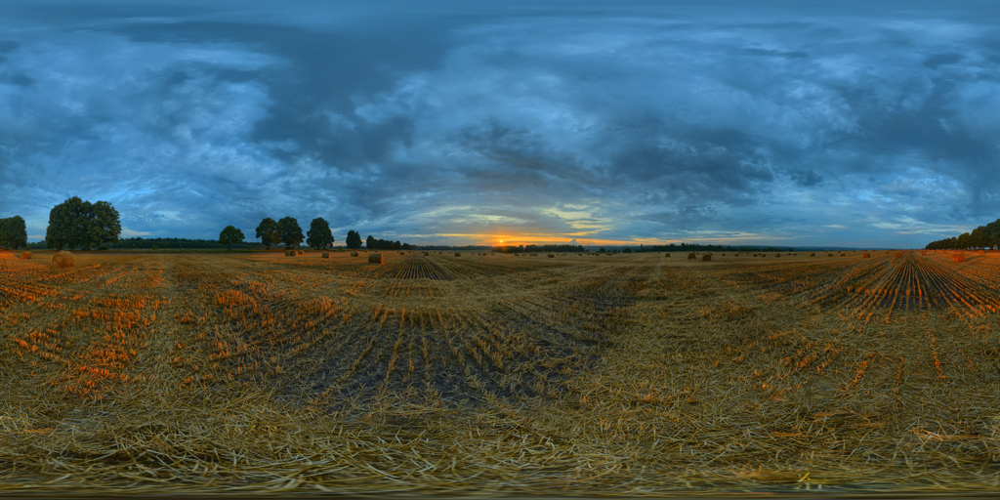
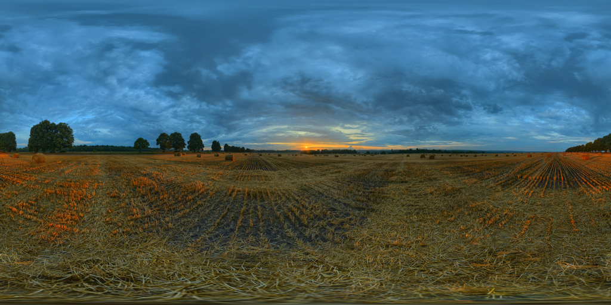
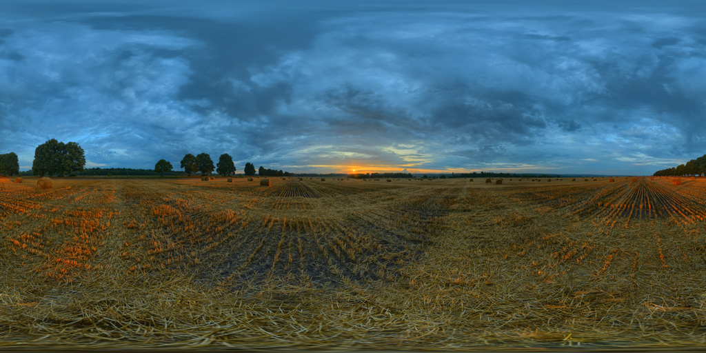

Hang in there, Alex. I feel like I’m getting closer. Everything is pointing towards the outskirts of town. I just have to go through the corn maze to get to the Medium. I’m sure it can’t be too difficult..
Too hard? Skip to the next section..
